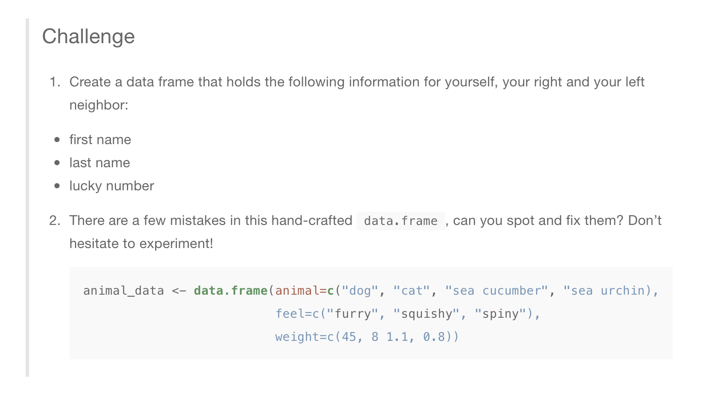

Chapter 3 R Language Basics
3.1 Objectives
- To get a refresher on the basics of R programming.
- To understand objects and functions.
- Learn how to create and use vectors.
- Learn how to deal with missing data.
- Learn how to use the help and documentation.
3.2 Glossary of terms
- Project: An R project consisting of a main folder (as the working directory), and all the files within.
- Object: An R variable. This can be a single value, a vector, list, matrix, data frame or other. Almost everything in R is referred to as an object, though there are several types of objects.
- Function: A command in R that executes a specific action and usually returns a value. For example, the
sum()function usually takes values for addition as arguments, and returns the sum. - Arguments: These are values or inputs passed into functions. For example in the function
sum(a, b), a and b are arguments to the sum function. These will be added and the sum will be returned. Functions usually have documentation where they specify which arguments are required for the function to work properly. - Package: A package, sometimes called a library, is a set of related pre-created functions in R. It is code that has been written by other people and then packaged together so that others can download the code and re-use it. For example, if somebody were to write code about how to simulate and model the behavior of an epidemic or infectious disease, they could create a package with the related code and documentation, so that others can benefit and use it as well.
3.3 Creating a new R project
To start, lets create a new project in R and call it DataWrangling. As mentioned, it is recommended to create this project in the directory user/sites/R/.
Click on the File > New Project and then select New Directory > New Project > [Select directory and enter project name] > Create.
Once the project is created, create a new R script by going to File > New File > R Script.
3.4 Getting started with code
3.4.1 Creating objects
For the purpose of learning the basics of R coding, we will refer to this excellent online resource. In addition to that, I will provide a summmary of the important points.
3.5 Objects and assignment of values
To create an objects and assign values:
object1 <- 5
object2 <- 10
object3 <- object1 + object23.5.1 Which assignment operator to use
The traditional assignment operator in R is the left-facing arrow <-. With time, the language also evolved to use the equal-sign = for this same purpoose. However, the standard practice is to always use the arrow operator <- for assigning values to objects, and to use the equal sign = to specify function arguments. For example:
newPerson <- createNewPerson(name = "John Doe", age = 45)In the previous example, the function createNewPerson() is called and two arguments (name and age) are provided. The result of the function is then assigned to the object newPerson. Note that the values provided to the arguments were specified using the equal-sign = while the assignment of the resulting value to the newPerson object was donw with the assignmment arrow operator <-.
Tip: Use option + - in Mac or alt + - in PC and RStudio will type in the arrow operator for you. This is very convenient and saves time and keystrokes.
3.7 Functions and arguments
A function takes inputs and returns a value - the result of the function. A function executes pre-written commands using the arguments (inputs) provided, and returns the result. For example executing the code sum(1,3,5) will return the value 9.
Many functions have arguments that need to be provided explicitly. For example, the following function:
createNewPerson(name = "John Doe", age = 45)Has two arguments that must be explicitly specified (written out) when __calling*__ the function.
*Calling a function is the term used when a function is executed in the code.
3.8 Types of objects
3.8.1 Vectors
Vectors are the most common type of object in R, and consist of a group or sequence of values (in other programming languages, vectors are called ‘arrays’). A vector is defined using the c() function. For example:
ageVector <- c(19,22,20,18,18,19,22,21)In the previous code, I created a vector called ageVector by using the c() function to combine a group of values into a vector.
There are several R functions that help you get information on vectors (and other objects), such as:
length(): Tells you the number of elements (distinct values) in the vector.class(): The type of data contained in the vector (such as numeric or string/character)str(): Detailed information about the structure and contents of the vector, including length and class, but other details as well.
3.8.1.1 Subsetting vectors
Subset vectors by using brackets [] after the object name and then specifying the index of the element/value you are interested in.
ageVector[1]Returns the first value in the vector.
ageVector[c(1,2,4)]Returns the first, second and fourth values.
ageVector[-1]Returns all values except the first.
ageVector[-c(1,3,5)]Returns all values except the first, third and firth values.
ageVector[2:5]Returns all values between the second and fifth, inclusive.
3.8.2 Matrix
A matrix consists of rows and columns. All columns must be of the same length as well as all rows (Eg: cant have a row with 3 entries and another with 5). To construct a matrix, we use a function conveniently called matrix().
y <- matrix(1:20, nrow=5,ncol=4) # generates 5 x 4 numeric matrix
Subset a matrix with [row , column]:
y[,4] # 4th column of matrix
y[3,] # 3rd row of matrix
y[2:4,1:3] # rows 2,3,4 of columns 1,2,33.8.3 List
Lists can have elements of any type and length. To construct one, use the list() function:
myl <- list(id="ID_1", a_vector=animals, a_matrix=y, age=5.3) # example of a list with 4 components
myl[[2]] # 2nd component of the list
myl[["id"]] # component named id in list3.8.4 Data frame
Data frames in R is like a mixture of lists and matrices. You have a set named columns each of which can be of different type (like in a list), but all columns must be of same length (like in a matrix). A way to think about a data frame is like a table in Excel and is commonly used to store tabular-type data.
Here is how you could construct a data frame.
mydf <- data.frame(ID=c(1:4),
Color=c("red", "white", "red", NA),
Passed=c(TRUE,TRUE,TRUE,FALSE),
Weight=c(99, 54, 85, 70),
Height=c(1.78, 1.67, 1.82, 1.59))
mydf3.9 Missing data
R automatically codes missing data with the NA value. Datasets that have missing data can be processed with a variety of ways that will help you decide how to deal with these missing values. Dealing with missing values is important when operating with rows and columns of data. For example, you might want to add all values in a row to get a total, but what happens if you have a bunch of NAs?
There are two main ways:
- Using the na.rm argument. Many functions such as sum() and mean() have an argument called na.rm (basically: NA remove) which you can set to TRUE in order to ignore missing values. For example:
heightVector <- c(110, 120, NA, NA, 100, NA)
avgHeight <- mean(heightVector, na.rm = TRUE)- Use functions such as
na.omit()oris.na(). For example:
heightVector <- c(110, 120, NA, NA, 100, NA)
avgHeight <- mean(na.omit(heightVector))or
heightVector <- c(110, 120, NA, NA, 100, NA)
avgHeight <- mean(!is.na(heightVector))Note the exlamation point before !is.na(), which makes sure that the function returns the values that are not NA. Otherwise, is.na() returns values that are NA. The exclamation point negates or reverses the operation.
3.10 Help and documentation
For general R help, look at the ‘Help’ tab in the Files and Miscellaneous pane.
For quick help relating to any function or package, use the question mark ? before the name of a function or package.
?sumWill open up the documentation for the sum() function and tell you how to use it.
3.11 Extra topic: Naming and notation
Objects or variables can have practically any namme, but there are some rules:
- Cannot start with a number, but can have numbers in the name.
1timeis not valid, buttime1andtime1resultare valid.
- Cannot be one of key-words or reserved words in R. For example, terms such as
if,else,for, andfunctionalready have specific uses in R and cannot be used for names of objects. - Must be descriptive, but succint.
- Are case sensitive:
value1is not the same asValue1, these are different objects.
In addition, there are several styles for naming and writing object names, especially if the name consists of more than one “English” word. For example, I previously referred to an object called newPerson. A different programmer maybe would have preferred to name it new_person instead. This is what we refer to when we talk about naming-styles or naming-conventions. The main styles are as follows:
- Camel-case: the first word is small-letters, but all other words start with a capital letter.
- Eg:
newPerson,verySmallChild,totalSum.
- Eg:
- Underscore sepatator: Uses underscores
_to separate the words.- Eg:
new_person,very_small_child,total_sum.
- Eg:
- All small: The entire name is in small letters.
- Eg;
newperson,verysmallchild,totalsum.
- Eg;
The important thing about notation styling is to just be consistent. I personally preferr to use camelCase for object and variable notation in programming language. However, when working with databases and the SQL language, it is recommended to use underscore_separators to name your tables and table-fields (columns). Therefore, when creating tables (or data frames) in R, I will typically use underscore_separators when naming the columns; but I will use camelCase for the names of any other kind of object. Eg:
salesTable <- data.table(value_one, value_two, total_sales)The previous example is not really valid R code, but it illustrates the naming convention principles that were previously discussed.
3.12 Challenge

3.6 Comments
Use the pound or hash sign
#to write comments in your code. Comments are non-executable pieces of writing that help explain your code.Sometimes, it is useful to “comment out” R code that is not currently being used, or when you want intend to delete a piece of code but are not sure yet if it is the write decision. You can add # to the beginning of each line of code that you want to be skipped during execution.
Tip: To comment out large chunks of code at a time, select/highlight the code and then use
commmand+shift+ c (orctrl+shift+ c in Windows). Select the same code and press the same sequence of keys to un-comment the code later, if necessary.